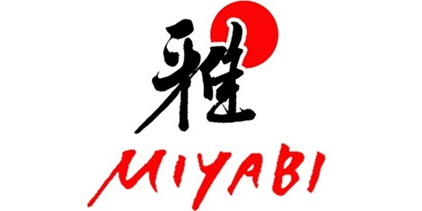
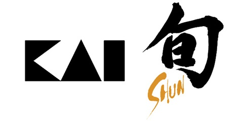

The finest knifes from Japan are here.
Every knife you see is handmade in Japan by professional artisans.
Tojiro JapanReleased in 1995, Tojiro started with stainless steel fruit knives because it was said that steel knives were not sharp enough to compare to carbon steel. Actually they use Clad steel and it is forged in thge same way of forgin a traditional Japanese sword "Katana" from Tamahagane. |
|
MiyabiIt requires more than 100 steps and 42 days to create a knive able to has a Miyabi mark. Developed to professionals and amateur chefs, those knives combine unique characteristics of samurai swords: exceptional sharpness, tradition, craft and a high performance with a modern design to obtain the definitive kitchen knives. |
 |
|  | Kai-ShunFor more than 112 years, Kai Corporation through Shun and the helps of their highly skilled artinas, produces blades of unpararelled quality and beauty, all handcrafted where each of those fine Kitchen cutlery takes at least 100 steps to complete. The Shun name honors this tradition of seasonal, mindful eating and is a mark of our dedication to making kitchen cutlery that is always at the peak of its perfection too. |